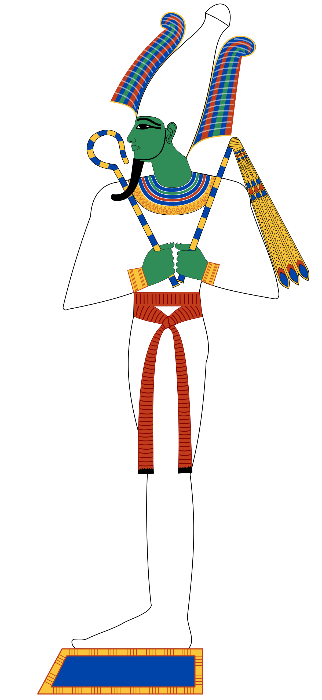

Usir, známý také jako Osiris, byl staroegyptský bůh plodnosti, úrody a podsvětí. Jeho jméno možná pochází z původních podob jako Asar, Ausar nebo Ausare. Usir měl složitý teologický vývoj a stal se jedním z nejdůležitějších bohů v egyptské mytologii. Byl uctíván jako vzkříšený vítěz nad smrtí a král podsvětní říše, kde mohou zemřelí žít věčným životem. Přestože byl důležitou postavou již v nejstarších teologických konceptech, spolehlivé zmínky o něm pocházejí až z doby 4. a 5. dynastie.
Usir se stal jedním z nejuctívanějších staroegyptských bohů díky své roli v podsvětí. Po smrti musí duše projít jeho soudem, kde je jejich srdce váženo proti pírku pravdy. Pokud je srdce lehčí než pírko, duše vstoupí do věčného života; pokud je těžší, je pohlcena nestvůrou Amemait. Tento proces zajišťoval spravedlnost a pořádek v posmrtném životě, což z Usira činilo klíčovou postavu egyptského náboženství. Usirova manželka Eset byla známá svou věrností a oddaností, což také přispělo k jeho velké popularitě. Jeho ikony a symboly byly běžně používány v egyptském náboženství a umění a jeho kult přežil až do konce starověku.